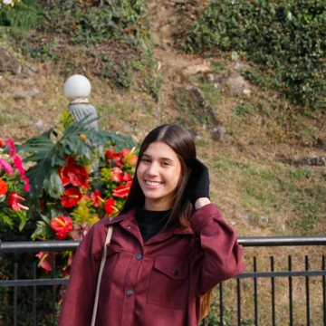

Alfabetização midiática para a era dos algoritmos, construída em código aberto.
Uma teoria de 1944, atualizada para o feed
Em 1944, Lazarsfeld e Katz mostraram que a mídia chega ao público passando por líderes de opinião: o Two-Step Flow.
Hoje existe um segundo mediador invisível, o algoritmo, que decide o alcance de cada mensagem antes de ela chegar a você.
Nome da tese: Two-Step Flow Algorítmico
O influenciador, líder de opinião
O algoritmo, mediador invisível
Você, quem recebe e age
Os números que sustentam o projeto
dos brasileiros com 10 anos ou mais usam internet
por mês movimentados via Pix para casas de apostas
de pessoas enviaram dinheiro a bets em um único mês
perfis de influenciadores removidos por publicidade irregular
R$ 3 bi enviados por 5 milhões de beneficiários do Bolsa Família em um mês (Banco Central, 2024).
CHECK, STEP, FLOW: do alerta à ação
Identificar
A equipe monitora tendências virais e sinaliza desinformação, ódio e publicidade financeira nociva. Cada caso vira um dossiê.
Decodificar
Um especialista voluntário responde a 4 perguntas fixas: quem lidera, como o algoritmo amplifica, quem paga e o que se normaliza.
Devolver
O caso vira roteiro de checagem, sinais de alerta e contranarrativa que o próprio público pode produzir.
Primeiro caso: o mercado das bets
"O Algoritmo da Fortuna: o mercado das bets e a indústria da desigualdade"
Com o professor Renan Fae, o episódio decodifica os modelos Rev-Share e CPA, em que o influenciador lucra com as perdas de quem o segue, a partir do Estudo Especial 119 do Banco Central.
guias de prevenção ao vício em apostas, em PT e EN
formatos: podcast, YouTube e LinkedIn
site aberto e gratuito, pensado para o celular
O código do projeto é público e aberto
checkstepflow/Check-Step-Flow
criação do repositório
em 3 datas: 08/08, 12/08 e 12/10
visual novo e blocos de estatísticas, ambos mergeados
uma página única: HTML, CSS e JS
site bilíngue com guias em PDF
Cada mudança passa por branch e pull request
Primeira versão do site no ar
Guias PT/EN e ajustes de conteúdo
Redesign: Globo LED, diagrama animado, flash cards
Estatísticas e traduções PT/EN revisadas
Fluxo adotado: branch descritiva, commits claros, pull request com resumo e só então o merge que publica o site. O histórico mostra o porquê de cada mudança.
Dois fundadores, uma rede de especialistas

Estratégia de conteúdo e pesquisa
Produção e gestão de comunidade
Sociologia
Psicologia
Jornalismo
Economia
Educação
Voluntários que decodificam cada caso.
Reconhecimento e alinhamento com a ONU
submissões de 129 países no UNESCO Youth Hackathon 2026, onde o projeto participou
iniciativas selecionadas no Prêmio LED 2027, entre elas o Check Step Flow
próximo passo: Intercom e Expocom, com apoio de contatos da universidade
Educação de qualidade: guia e site gratuitos
Menos desigualdades: foco no público mais exposto às bets
Instituições eficazes: cidadãos capazes de escrutínio
Próximos cinco temas da trilha
1Caso ela diga não: misoginia digital
2Soluções milagrosas: curas e cursos sem respaldo
3Desinformação eleitoral no ciclo de 2026
4IA generativa e deepfakes
5Publicidade dirigida a crianças
checkstepflow@gmail.com
github.com/checkstepflow/Check-Step-Flow